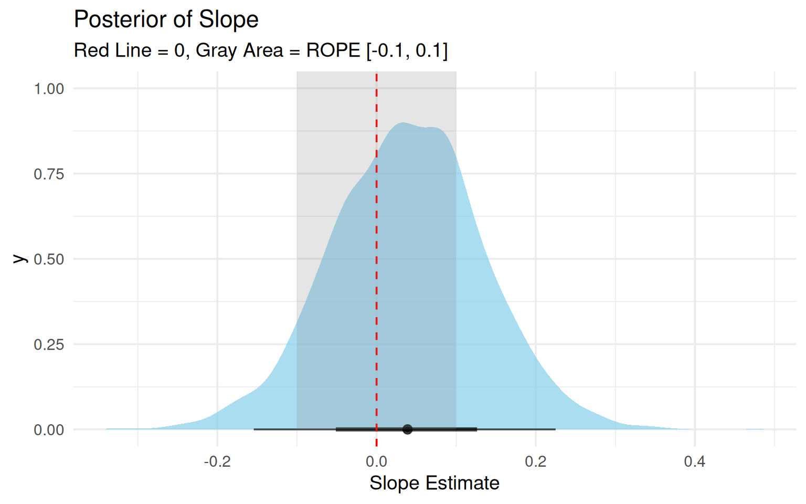

Code
library(brms)
library(tidyverse)
library(bayesplot)
library(posterior)
library(bayestestR)
library(emmeans)
library(marginaleffects)
library(patchwork)
library(tidybayes)
theme_set(theme_minimal(base_size = 14))Understanding Divergences in Bayesian Decision Making
In this specific example, we will simulate a scenario where we collect data sequentially (\(N=20, 50, 100\)) and track how three different Bayesian decision metrics behave:
We will also see how prior width dramatically affects the Bayes Factor but has less impact on ROPE and LOO (once N is moderate).
library(brms)
library(tidyverse)
library(bayesplot)
library(posterior)
library(bayestestR)
library(emmeans)
library(marginaleffects)
library(patchwork)
library(tidybayes)
theme_set(theme_minimal(base_size = 14))We generate data where there is a small but real effect (\(d \approx 0.2\)). This is the “danger zone” where decision criteria often disagree.
set.seed(2025) # Fixed seed for reproducibility
# Function to generate data
generate_data <- function(n) {
tibble(
condition = rep(c("A", "B"), each = n / 2),
# True effect of 0.2 (small effect)
y = rnorm(n, mean = ifelse(condition == "B", 0.2, 0), sd = 1)
)
}We will loop through sample sizes \(N = \{20, 50, 100\}\). At each step, we fit three models:
y ~ 1y ~ condition, prior normal(0, 5)y ~ condition, prior normal(0, 0.2)sample_sizes <- c(20, 50, 100)
results_list <- list()
for (n in sample_sizes) {
# 1. Generate Data
data_n <- generate_data(n)
# 2. Fit Models
# H0: Null model
fit_null <- brm(
y ~ 1,
data = data_n,
prior = prior(normal(0, 1), class = Intercept),
silent = 2, refresh = 0, seed = 123
)
# H1 Wide: Wide prior on slope
fit_wide <- brm(
y ~ condition,
data = data_n,
prior = c(
prior(normal(0, 1), class = Intercept),
prior(normal(0, 5), class = b) # Very wide!
),
sample_prior = "yes", # Needed for Bayes Factor
silent = 2, refresh = 0, seed = 123
)
# H1 Narrow: Narrow prior on slope
fit_narrow <- brm(
y ~ condition,
data = data_n,
prior = c(
prior(normal(0, 1), class = Intercept),
prior(normal(0, 0.25), class = b) # Narrow, informative
),
sample_prior = "yes",
silent = 2, refresh = 0, seed = 123
)
# 3. Compute Metrics
# --- ROPE (on Narrow model, typically best estimate) ---
# ROPE range [-0.1, 0.1] (half of true effect)
rope_res <- rope(fit_narrow, range = c(-0.1, 0.1), ci = 0.95)
rope_pct_in <- rope_res$ROPE_Percentage[2] # conditionB
# --- Bayes Factor (Savage-Dickey) ---
# For Wide Model
bf_wide <- hypothesis(fit_wide, "conditionB = 0")
bf_val_wide <- 1 / bf_wide$hypothesis$Evid.Ratio # BF10 (evidence FOR effect)
# For Narrow Model
bf_narrow <- hypothesis(fit_narrow, "conditionB = 0")
bf_val_narrow <- 1 / bf_narrow$hypothesis$Evid.Ratio # BF10
# --- LOO ---
loo_null <- loo(fit_null)
loo_wide <- loo(fit_wide)
loo_comp <- loo_compare(loo_null, loo_wide)
elpd_diff <- loo_comp[2, "elpd_diff"] # Diff from best model
# If H1 is better, elpd_diff is 0 (it's top). If H0 better, number is negative.
# Let's calculate purely: elpd(H1) - elpd(H0)
elpd_gain <- loo_wide$estimates["elpd_loo", "Estimate"] - loo_null$estimates["elpd_loo", "Estimate"]
# Store
results_list[[paste0("N", n)]] <- tibble(
N = n,
ROPE_in_prob = rope_pct_in,
BF10_Wide = bf_val_wide,
BF10_Narrow = bf_val_narrow,
LOO_gain = elpd_gain
)
}
results_df <- bind_rows(results_list)knitr::kable(results_df, digits = 3)| N | ROPE_in_prob | BF10_Wide | BF10_Narrow | LOO_gain |
|---|---|---|---|---|
| 20 | 0.371 | 0.089 | 0.832 | -1.290 |
| 50 | 0.414 | 0.062 | 0.796 | -1.069 |
| 100 | 0.412 | 0.057 | 0.751 | -0.628 |
Let’s visualize how these metrics evolve as N increases.
# Prepare data for plotting
plot_data <- results_df %>%
pivot_longer(
cols = c(ROPE_in_prob, BF10_Wide, BF10_Narrow, LOO_gain),
names_to = "Metric",
values_to = "Value"
)
# Plot 1: Bayes Factors
p1 <- plot_data %>%
filter(str_detect(Metric, "BF10")) %>%
ggplot(aes(x = factor(N), y = Value, color = Metric, group = Metric)) +
geom_hline(yintercept = 1, linetype = "dashed", color = "gray50") +
geom_hline(yintercept = 3, linetype = "dotted", color = "gray50", alpha=0.5) +
geom_line(size = 1.2) +
geom_point(size = 3) +
scale_y_log10() +
labs(title = "Evidence (Bayes Factor)", y = "BF10 (Log Scale)", color = "Prior") +
theme(legend.position = "bottom")
# Plot 2: ROPE
p2 <- plot_data %>%
filter(Metric == "ROPE_in_prob") %>%
ggplot(aes(x = factor(N), y = Value, group = 1)) +
geom_line(color = "forestgreen", size = 1.2) +
geom_point(color = "forestgreen", size = 3) +
labs(title = "Practical Significance (ROPE)",
subtitle = "% Posterior inside [-0.1, 0.1]",
y = "Prob. in ROPE") +
ylim(0, 1)
# Plot 3: LOO Prediction
p3 <- plot_data %>%
filter(Metric == "LOO_gain") %>%
ggplot(aes(x = factor(N), y = Value, group = 1)) +
geom_hline(yintercept = 0, linetype = "dashed", color = "gray50") +
geom_line(color = "purple", size = 1.2) +
geom_point(color = "purple", size = 3) +
labs(title = "Predictive Gain (LOO)",
subtitle = "elpd(Model) - elpd(Null)",
y = "Delta elpd")
(p1 / (p2 + p3)) +
plot_annotation(title = "Evolution of Decision Metrics by Sample Size (N)",
subtitle = "Note how Wide Priors punish BF, while ROPE focuses on magnitude")
BF10_Wide is significantly lower than BF10_Narrow. The wide prior penalizes the alternative hypothesis because it spreads probability density over a huge range where data is not found (“Dilution Effect”).Now let’s look at a continuous predictor \(X\) and a directional hypothesis \(X > 0\).
# Simulate 100 observations
set.seed(999)
N <- 100
df_cont <- tibble(
x = rnorm(N),
y = 0.3 * x + rnorm(N)
)
fit_cont <- brm(y ~ x, data = df_cont, refresh = 0)We test the hypothesis that the slope > 0.
hypothesis()hyp <- hypothesis(fit_cont, "x > 0")
print(hyp)Hypothesis Tests for class b:
Hypothesis Estimate Est.Error CI.Lower CI.Upper Evid.Ratio Post.Prob Star
1 (x) > 0 0.04 0.1 -0.12 0.19 1.96 0.66
---
'CI': 90%-CI for one-sided and 95%-CI for two-sided hypotheses.
'*': For one-sided hypotheses, the posterior probability exceeds 95%;
for two-sided hypotheses, the value tested against lies outside the 95%-CI.
Posterior probabilities of point hypotheses assume equal prior probabilities.The Evid.Ratio here represents \(P(H_1) / P(H_0)\). For a one-sided hypothesis, this is simply \(P(\beta > 0) / P(\beta \le 0)\).
marginaleffects and bayestestRWe can inspect the entire distribution to see how much of it is greater than 0, and combined with a ROPE.
# Get draws
draws <- as_draws_df(fit_cont)
# Visualize
ggplot(draws, aes(x = b_x)) +
stat_halfeye(fill = "skyblue", alpha = 0.7) +
geom_vline(xintercept = 0, color = "red", linetype = "dashed") +
# Add ROPE area
annotate("rect", xmin = -0.1, xmax = 0.1, ymin = 0, ymax = Inf, alpha = 0.2, fill = "gray50") +
labs(title = "Posterior of Slope",
subtitle = "Red Line = 0, Gray Area = ROPE [-0.1, 0.1]",
x = "Slope Estimate")
# Metrics
pd <- p_direction(fit_cont) # Probability of Direction (similar to one-sided hypothesis)
rope_res <- rope(fit_cont, range = c(-0.1, 0.1))
print(pd)Probability of Direction
Parameter | pd
--------------------
(Intercept) | 85.60%
x | 66.17%print(rope_res)# Proportion of samples inside the ROPE [-0.10, 0.10]:
Parameter | Inside ROPE
-----------------------
Intercept | 53.29 %
x | 71.37 %Checking these two together gives a complete picture: “We are sure it is positive (\(pd \approx 100\%\)), and we are sure it is practically significant (0% in ROPE).”